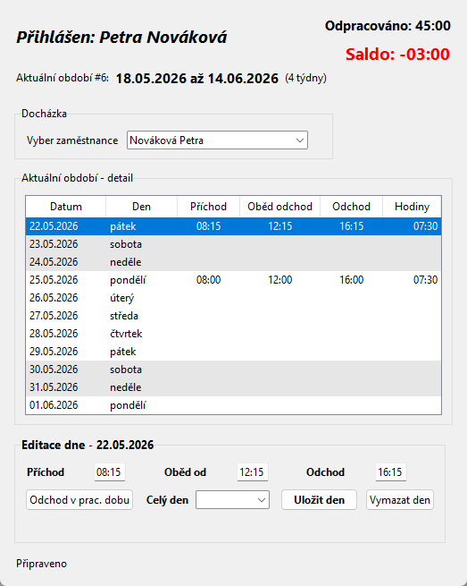
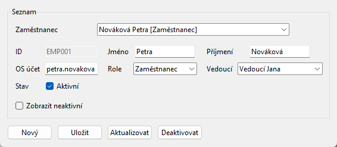
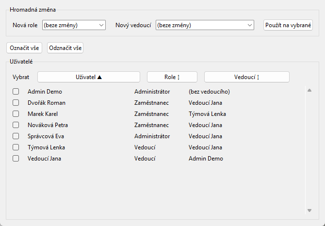
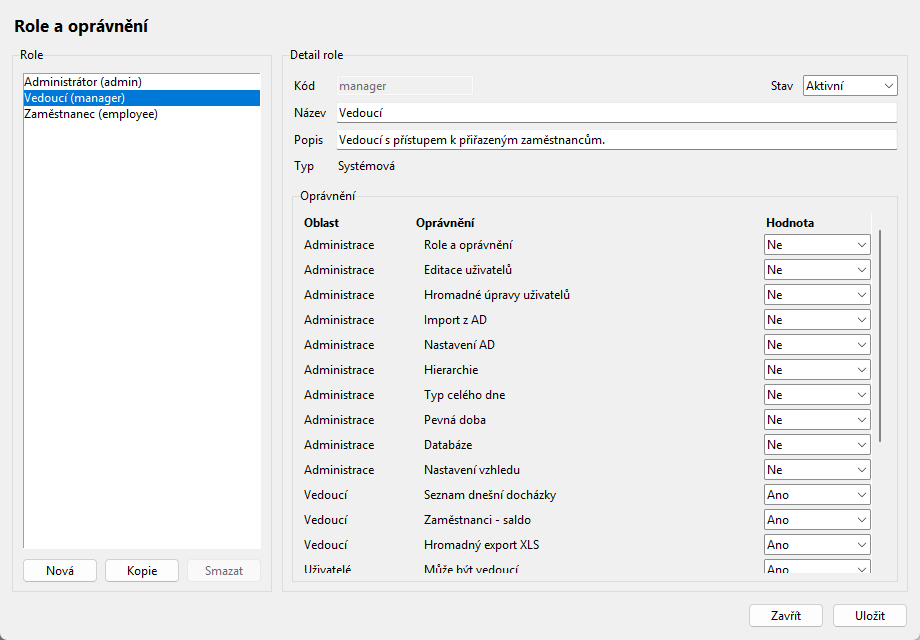
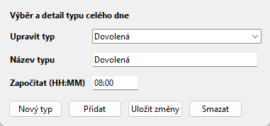
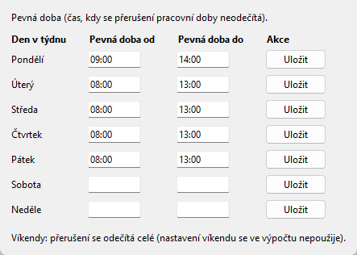
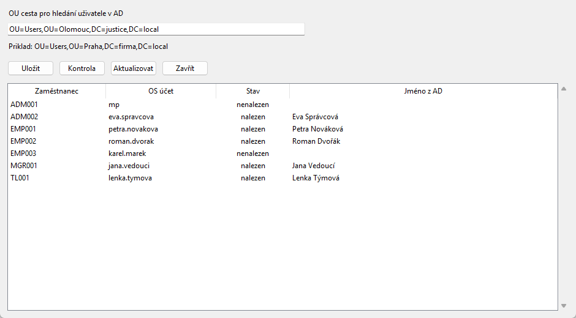
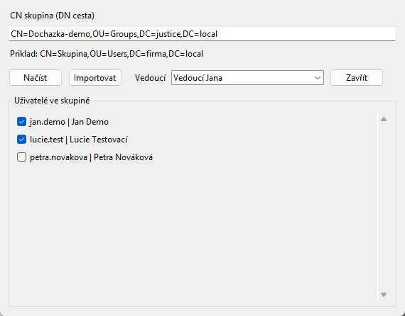
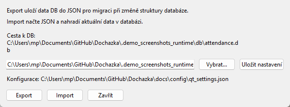
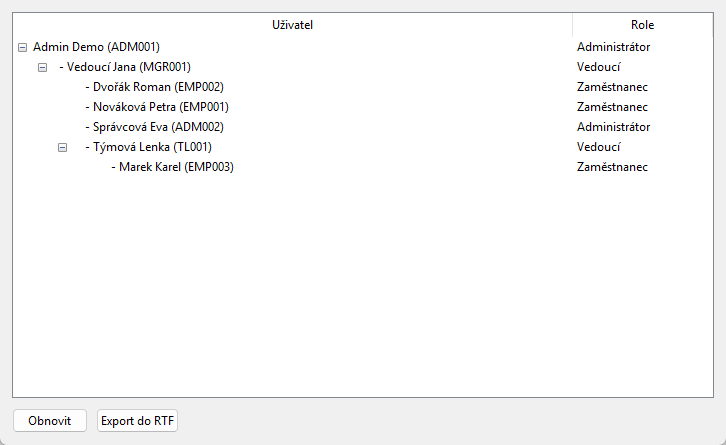

Screenshot 1: Administrátor má dostupnou kompletní správu aplikace i vedoucí přehledy. V hlavním okně může vybrat libovolného zaměstnance a upravit jeho docházku.

Screenshot 2: Okno Administrace - Správa uživatelů - Editace uživatelů slouží k založení, úpravě a deaktivaci zaměstnance.

Screenshot 3: Okno mění roli nebo vedoucího pro více uživatelů najednou.

Screenshot 4: Role určují, jaká menu a data uživatel vidí. Systémová role admin je chráněná proti omezení.
| Typ oprávnění | Význam |
|---|---|
| Ano / Ne | Zapíná nebo vypíná konkrétní funkci, například hromadný export nebo databázový import/export. |
| Vlastní | Uživatel vidí nebo spravuje pouze sebe. |
| Podřízení | Uživatel vidí sebe a přímé podřízené. |
| Podřízení včetně dalších úrovní | Uživatel vidí sebe, přímé podřízené i celý navazující strom. |
| Všichni | Uživatel vidí všechny zaměstnance. |

Screenshot 5: Okno spravuje typy celého dne, například dovolenou, nemoc, služební cestu nebo lékaře.
HH:MM, například 08:00 nebo 05:00.
Screenshot 6: Pevná doba určuje interval, ve kterém se odchod v pracovní době neodečítá.

Screenshot 7: Nastavení AD ukládá OU cestu, kontroluje OS účty proti Active Directory a může aktualizovat jména uživatelů.

Screenshot 8: Import z AD načte členy skupiny, předvybere nové uživatele a při importu jim nastaví vybraného vedoucího.

Screenshot 9: Okno Databáze slouží k výběru databázového souboru, exportu dat do JSON a importu JSON zpět do databáze.
Doporučení: Před importem databáze nebo větší změnou rolí nejdřív proveď export do JSON.

Screenshot 10: Hierarchie ukazuje strom vedoucích a podřízených. Lze ji exportovat do RTF.

Screenshot 11: Seznam dnešní docházky lze řadit podle zaměstnance, příchodu a odchodu.

Screenshot 12: Přehled salda lze řadit podle zaměstnance nebo hodnoty salda.

Screenshot 13: Hromadný export XLS umí samostatné soubory i jeden workbook s listy podle zaměstnanců.

Screenshot 14: Detail docházky je čtecí přehled období s odchody v pracovní době.

Screenshot 15: Výběr období přepíná hlavní okno na jiný čtyřtýdenní cyklus.

Screenshot 16: Statistika ukazuje roční souhrn typů celého dne pro vybraného zaměstnance.
V Qt verzi je v menu Administrace dostupné okno Nastavení vzhledu. Výchozí zelený motiv je součástí aplikace, další motivy se načítají z docs/config/qt_theme_presets.json. Administrátor může uložit aktuální vzhled jako preset nebo smazat vlastní preset; výchozí motiv se nepřepisuje ani nemaže.